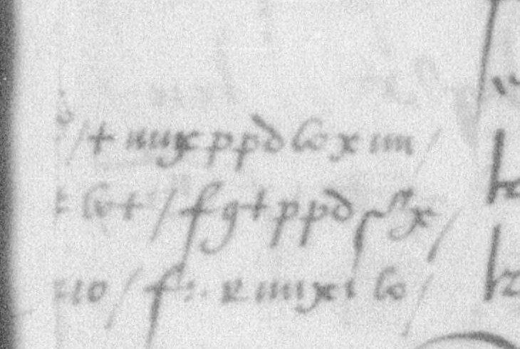
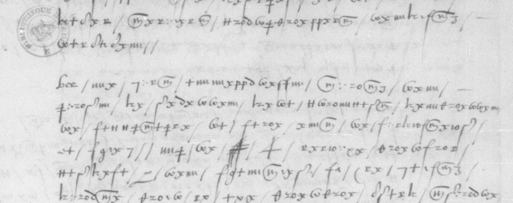

At a glanceCiphertext-only break · partial (99% of the cipher)
- The document
- A report to the connétable from an unnamed Catholic gentleman of the Agenais, December 1560, on the Protestant rising in Guyenne.
- Where
- BnF français 3157, ff. 152r–156v (catalogued as item 67 at f. 158); no gloss, key or decipherment nearby.
- The cipher
- 1,715 cipher words in a cursive pseudo-script, divided by strokes, with two-stroke units.
- How it was read
- A one-sign-per-letter solver failed; the key came out once the two-stroke units were recognised and the commonest word fitted que. The transcription was then checked sign by sign.
- What it says
- Two thousand at Clairac resolved to fight rather than die “par ung bourreau”, the rebel captains at Nérac with the king of Navarre, and deputies sent to the États of Orléans.
- Still open
- Sixteen scattered words; the writer’s name is not in the text.

01 The document
Français 3157 is a volume of letters and papers of Anne de Montmorency and his family, 1559–1562. Item 67 is five leaves, ff. 152r–156v (Gallica views 153–158). The dorse carries a later endorsement “henry second” and one line in the same signs. It stands between letters of Honorat de Savoie, comte de Villars, from Languedoc, which are in clear and carry no key. Item 68, which begins at f. 158, is Marillac’s clear despatch from England, which is why the notice seems to put the mémoire there.
The mémoire has no address, greeting or signature. It speaks to “vostre grandeur”, pairs the king and “vostre grandeur” throughout, and ends with enclosures for the recipient to read. That fits the connétable, whose papers these are, back at court after the death of François II on 5 December.
Two small additions were deciphered in a parallel pass on this target, and both check against the key. A marginal note at f. 153r, line 14, belongs after “le juge mage et aultres magistrats du siege presidal d’Agen”: +mmxppdWxm Wx+ fg+ppdS3x io f:xrmx:W, “assemblez en la chambre du conseil”. The one cipher word on the dorse is “Advertissemens”.

02 The cipher
The signs are drawn like a cursive hand, and a stroke divides the words. It is a homophonic substitution with some compound signs:
- Homophones. e is x or ff; n is r, a smaller, rounder form of x that is easy to confuse with it; s is m, n, nn or 3; r is s, S or s3; i is i, ‡, y or e; u/v is zo, io or δ.
- Two-stroke units, one letter each. zo u, pp m, io u, s3 r, ff e, nn s, lz d, :. o.
- Polyphonic signs. δ is u/v, b and g (“gouvernement”, “bien”, “langaiges”); ‡ is i and sometimes a.
- Four word codes. Z pour (also the syllable, “y pourvoient”), 4 roy, c+, i+ and e+ et, F and g sieur. Every name and place is spelt out.
The key is in targets/memoire1560/key.txt, and decrypt.py applies it line by line.

03 The decipherment
The text below keeps the writer’s 1560 spelling. The key does not distinguish u from v or i from j; these, and a few accents, are set as the sense requires. Words in [square brackets] are emended where the mechanical decrypt differs from the evident word, whether by a slip of the writer, a doubtful sign or a polyphonic value. [..] marks a word not deciphered. The paragraphs follow the manuscript.
f. 152r Despuis les derniers advertissemens que envoia[y] a vostre grandeur, les affaires de pardeça [on]t [couru] de mal en pis, continuant les presches et assemblees plus que jamais; et [aux] villes ou souloit avoir ung predicant, il en y a a present deux; ausquels presches il y [a] deux notables femmes qui y assistent ordinairement avecques grand suyte, qui sont madame de Castelpers et madamoiselle de Boesse, femme du cappitaine Montseignac. Vrai est que les rebelles, ayant entendu que le roy envoyoit pardeça le sieur de Termes avecques quelques compaignies, [on]t practiqué quelques seigneurs [..] le escripre a sa majesté et luy [faire] entendre que [veu] chacun de pardeça vit soubz l'obeissance du roy, [ce] [qui] pourr[oit] avoir faict ce [qu'a] rapporté, tant pour [ung] pro[f]it particulier qu'ils se pourroient estre ressentis que pour estre de la ligue desdicts rebelles. A quoi ne fault que le roy et vostre [g]randeur s'arreste aulcunement, car ne font cella que pour se [..] [..] augmenter leurs trouppes et gaigner temps pour avoir secours de quelques estrangiers qu'ils disent se tenir asseures.
f. 152v [Il] est a present facil les chastier, et pour l'advenir je ne sc[ai] qu'il pourr[a] estre, pour les grandes factions et menees [qui] se y [trouvent], avecques beaucoup de qualite de personnes. [..] que soit vray, puis peu de jours [il] s'est faict une assemblee en la ville de Clairac, en Agenois, d'environ deux mil rebelles, [ou] fust arresté et conclut que si le roy envoyoit forces de pardeça, qu'ils se mect[r]oient en deffence, disans qu'ils aiment mieulx mourir les armes en main que si le roy les faisoit executer par ung bourreau. Leurs trouppes et sectes augmentent touts les jours. Vostre grandeur ne pourroit croire le nombre de grands seigneurs et noblesse [qui] sont intelligence avecques ceste canaille; vrai est qu'ils ne se declairent poinct, mais [qu'ils] y donnent toute la faveur et conseil qu'ils peuvent. Le frere du seigneur de Caulmont est sieur abbé dudict Clairac. Lesdicts de Caulmont [ont] seigneurie, place et chasteau [..] [..] n'ayent de ministres, et qu'il ne s'y face assemblee de rebelles, dequoi ai cydevant adverti vostre grandeur. Le juge des terres dudict seigneur de Caulmont, nommé Reclus, est parti pour
f. 153r aller en court, lequel par les moien[s] desdicts de Caulmont et par la faveur du chief [a] esté esleu, pour les raisons [que] cydevant [ay] escript[es] [a] vostre grandeur, pour aller [de] les remonstrances des doleances pour le tiers estat du pais d'Agenois, avecques ung syndic du pais d'Agenois nommé Boissonade, lesquels sont a present pardela, [qui] pallieront et dissimuleront la verite de toutes les choses [qui] sont passees pardeça; car fust arresté par le juge mage et aultres magistrats du siege presidal d'Agen qu'il n'estoit besoing que lesdicts deleg[ué] et syndic remonstrassent la totalle verité des choses, pour [n']irriter le roy et eviter que sa majesté [ne] executast sa rigueur sur ledict pais d'Agenois. Si vostre grandeur trouvoit bon de ouir particulierement lesdicts syndic et delegué, [entendres] par leur bouche de grandes choses qu'ont [discouru] audict pais d'Agenois. Ledict juge [mage] est parti pour s'en aller [par]dela expressement pour solliciter lesdicts syndic et delegué pour leur [de] taiser la verite des choses [discourues] audict pais d'Agenois. Vostre grandeur advisera s'il sera bon de le surprendre sur le faict pendent qu'il sera pardela, [et] luy [..] rendre raison du devoir qu'il a faict en sa province. Vostre
f. 153v grandeur a beaucoup de memoires contre luy contenant les abus et malversations commises en son estat de chief de province. Ledict Reclus, delegué a la judicature pour lesdicts seigneurs de Caulmont de la ville de Thonens, Caulmont et aultres lieux et places qu'ils [tiennent], toutes lesquelles y a ordinairement ministres predicans, au presche desquels il a assisté et, luy present, s'y est faict assemblee de rebelles. S'il est oui sur lesdicts faicts, je ne scai quelle raison il pourra rendre du devoir de justice qu'il y a faict. Monsieur de Biron, puis ung mo[i]s, [il] fust une assemblee d'environ cinq cens soldats, la pluspart arcabousiers, lesquels il disoit vouloir conduire, suivant le commandement du roy, en la ville de Bergerac pour gaigner le chasteau d'icelle et executer sur les habitans quelque commandement que sa majesté l'avoit chargé. Toutesfois, ayant faict ladicte assemblee, apres avoir communiqué aux principaulx habitans dudict [Bergerac], il en renvoia lesdicts soldats et s'en retourna en sa maison sans [aultre] execution, chose [qui] ne donne a presumer
f. 154r rien de bon pour les abus que s'y peuvent commectre, d'aultant qu'il y faict le semblable a Villeneufve, Montflanquin [et] aultres villes suspectes de pardeça. Je ne scai s'il a faict ces choses du mandement du roy ou vostre; je n'ai voulleu faillir [d']en donner advertissem[en]t, pour ce que despuis qu'il a eu parlamenté avecques eulx, [ils] ne se sont amendés aulcunement, ains sont pis que [jamais]. Aussi je ne scai si le roy et vostre grandeur estes advertis que ledict [sieur] de Biron est allié de Mesmi, qu'est ung des principaulx cappitaines des rebelles de pardeça. Ledict Mesmi, le cappitaine La Caze, le cappitaine Jehan de Mesmes, le cappitaine La Borde de Villeneufve, le cappitaine Chaulmont et aultres chiefs des rebelles, dont cydevant [je] ai envoié leur [noms], sont [par]deça, faisant leurs menees acoustumees, residans la pluspart du temps en la ville de Nerac; mesmes ledict Mesmi y est a present malade et se est faict conduire [dans] une lictiere puis huict jours. Si vostre grandeur trouvoit bon, cependant que le chief est pardela et qu'il se veult dire
f. 154v innocent de la co[n]spiration que le roy leur comandast de representer les susdicts [c]appitaines pour les [..] respondre [a] leur bouche, attendu mesmes [qu']ils ont resid[é] cy devant aupres de la personne dudict chief et suite de sa court en son gouvernement de Guyenne, sa residence a present en sa ville de Nerac la pluspart du temps. Si sa majesté faict ledict commandement, ce sera bien le moyen de les pouvoir recouvrer, aultrement qui sera tresque difficil, ayants recouvert[z] les susdicts cappita[ines], veu [par] le moyen de la trouppe diceulx La Caze; et mesmes le roy [s]era [a] [s]cavoir par la entierement les conspirations et entreprinses faictes contre sa majesté [et] son royaulme. Monsieur de Lioux, frere du sieur de Montluc, s'en va en court, qui est compose de mesme humeur que beaucoup d'aultres qui veullent servir le roy masques; ce [qu']il en a donné cy devant advertissement [a] ce que le roy et [vo]stre grandeur ne s'y [fient], [..] [..] entendu leurs menees et factions. Ledict de Lioux, pendent qu'il estoit pardeça, a faict de grands menasses a
f. 155r ceulx qui font service au roy, disant qu'il [n']a personne qu'aie parle contre le chief qu'avant peu de temps ne luy couste la vie, [et] de pareilles menasses et parolles usent touts ceulx de la compaignie dudict chief, mesmes ceulx [qui] l'avoient acompaigné [a] son voiaige de court, lesquels s'en sont retournes de pardeça [et] faisant leur monstre dernier en la ville d'Agen tenoient publiquement lesdicts langaiges. Qui se font assemblees touts les jours de rebelles, de la pluspart desquelles le cappitaine La Caze est le conducteur et chief. Si le roy n'envoie quelcun pardeça pour les chast[ie]r, ce se fai[ct] doubte qu'il n'y aie quelque grand trouble ou inconvenient [a] l'advenir. Lesdicts rebelles m'ont rendu en tel estat que je [n']ause sortir de ma maison si ce n'est de nuict, et font courir le bruict que monsieur de Termes et ses compaignies que l'on disoit qui venoient pardeça ont esté contramandes pour s'en retourner, chose qu'a donné ung grand plaisir [et] contentament ausdicts rebelles [..] [..] pour continuer leurs factions.
f. 155v Si [ainsi] estoit, et pensant que vostre grandeur ne le trouvast [mauvais] pour la conservation de ma vie, je me pour retirerois a la suicte de la court pour illec m'emploier en treshumble obeissance a tout ce que le roy et vostre grandeur [me] plairoit me [co]mmander, car aussi bien [estant] lesdicts rebelles l'auctorit[é] de pardeça telle qu'ils l'ont, m'ont osté touts moyens de pouvoir pourveoir [n]y aulcunement a mes affaires si ce n'est au hasard de ma vie. Lesdicts rebelles continuent et font journellement de nouvelles compositions qu'ils [..] et envoyent par tout ce pays pour [..] le menu peuple de leur bonne voye et les rendre s[ch]ismaticques, comme vostre grandeur pourr[a] veoir [par] ung double que [j']en envoie, qu'ils intitulent l'edict faict par Dieu le pere, combien que croi qu'il s'en y est [..] envoié d'ailleurs. Estant ce porteur prest a monter a cheval, ay receu une lettre escripte et signee par ung bourgeois de la ville d'Agen, homme digne de foi, sur laquele vostre grandeur peult prendre [f]-
f. 156r fondement, et s'il [vous] plaist prendre la peine de la veoir, trouverés que contient advertissemens de grand consequance, mesmes des desordres que se commectent et continuent journelement par ces rebelles de [par]deça. Il est besoing que le roy et vostre grandeur y pourvoie promptement. Le langaige que les rebelles tienent entre eulx, [ainsin] que j'ay peu descouvrir, est [qu'ils] ne taichent que a gaigner quelque peu de temps pour avoir le secours [qu'ils] se tienent asseures d'ung prince et de quelques estrangiers du costé de Geneve et cantons de Suisses, entre les mains duquel prince s'asseurent mectre deux villes fortes et de frontiere de ceste Guyenne. Il est tresnecessaire que le roy [et] vostre grandeur y pourvoie[nt] diligement, [vous] asseurant qu'il se y faict de grands menees et avec telles intelligences de tant d'endroicts que je ne scai qu'il en pourra advenir. Je n'en oserois escripre plus avant que je ne sois mieulx certioré des choses. Monsieur de Fumel, qu'est mon prochain voisin, est arrivé de la court puis peu de jours et puis sadicte venue il use
f. 156v contre moi de grands menasses, je n'ai peu scavoir les occasions. Je avois baillé [a] ung pacquet audict sieur de Fumel en s'en allant a la court pour le faire tenir a vostre grandeur, ou il y avoit advertissemens de grand consequance, ensemble une lettre que le chief m'avoit escripte. Je supplie vostre grandeur me faire advertir si avés receu ledict pacquet, advertissemens et lettre dudict chief. J'ai aussi receu presentement une lettre du garde des sceaulx du siege presidial de Cahors, laquelle [vous] envoie, et [par] icelle vostre grandeur pourra entendre les desordres que se commectent journellement par les rebelles es provinces de pardeça.
04 What it tells
The mémoire is a Catholic view of the first weeks of the Protestant rising in the Agenais, the county around Agen in Guyenne:
- Clairac. The Reformed churches of Guyenne held a synod there in November 1560. The writer reports an assembly of about two thousand that resolved to resist any royal force.
- The Caumonts. The seigneur de Caumont’s brother is abbé of Clairac, every Caumont place has its minister, and their judge Reclus has been elected, with Navarre’s favour, to carry the tiers état’s doléances to the États généraux then sitting at Orléans. The syndic Boissonade goes with him, and the juge mage of Agen has followed them to court to make sure they keep quiet.
- Biron. Armand de Gontaut-Biron raised five hundred arquebusiers to take the castle of Bergerac on the king’s order, then parleyed and sent them home. The writer notes that Biron is allied to Mesmi, one of the rebel captains.
- “Le chief” at Nérac. Antoine de Bourbon, king of Navarre and governor of Guyenne, lives at Nérac with the rebel captains around him and claims to be innocent of the conspiracy of Amboise. The writer proposes that the king order him to hand the captains over.
- Lioux. Joachim de Monluc, sieur de Lioux, brother of Blaise de Monluc, is going to court and threatens anyone who speaks against the chief.
- Foreign help and the writer’s danger. The rebels expect help from a prince, from Geneva and from the Swiss cantons, in return for two frontier towns. The writer, threatened by the rebels and by his neighbour Fumel, dares not leave his house by day. He sends a Protestant tract, “l’edict faict par Dieu le pere”, a letter from a bourgeois of Agen, and one from the garde des sceaux of the présidial of Cahors.
The writer is not Blaise de Monluc, who is named in the third person. He had received a letter from Navarre, and he lived near Fumel, in the upper Agenais.
05 Method
- Access and transcription. The ten pages were fetched at full resolution from Gallica and cut into half-width bands. Model subagents transcribed each sign into an ASCII code (
SIGNS.md). - A simple-substitution solver fails. Simulated annealing with one letter per sign, keeping the word divisions and scoring with a 16th-century French 5-gram model, gave nonsense.
- The first units. z is followed by o in 262 of 283 cases, so zo is one sign. The commonest four-sign word, Tzox (23 times in the first pass), fitted “que”, and Wx, Wxm and hx fitted le, les and de. Started from these, the solver produced “les derniers advertissemens” and “les affaires de pardeça”.
- Alignment. Decrypted words were matched to the French they had to be, and each match fixed further units: xrQxrhio = entendu (r = n, io = u), 3shDx+is3xppxrQ = ordinairement (s3 = r), nn:WW:iQ = souloit (nn = s), lzDm+xm = disans (lz = d). Short groups standing alone were identified from context as word codes.
- Correction against the images. With the key in hand, every line was checked against the images, and a sign was changed only where the image supports the change. This produced about 300 x→r fixes and restored dropped signs. Where the image matches the transcription and the key does not fit, the sign was left as written and logged as a possible slip (
transcription/corrections_*.tsv).
06 What remains
- Words not deciphered. Sixteen scattered words, 0.9% of the cipher words, each once: 152r.16, 152r.26 (two), 152v.06, 152v.26 (two), 153r.31, 154v.03, 154v.24 (two), 155r.29 (two), 155v.16, 155v.17 and 155v.22. Their signs have values, but the letters do not resolve into a word from context.
- Emended words. 108 words are deciphered with a marked emendation: a sign missing or wrongly formed by the writer, or a polyphonic value chosen from context. The emendation is marked in the reading files. Uncertain names are the captain “Montseignac” and mademoiselle “de Boesse” (grade C).
- Measured extent. With the words not deciphered, the supplied letters in brackets and the emendations counted as holes, the reading builds coherent sentences but reads at 94.0% of its words (measured 24 October 2026), under the 95% a complete reading needs.
- The writer. Unidentified. The text gives only a neighbour of Fumel, a correspondent of Navarre, and a man who had sent earlier reports to the connétable.
Full texts
The transcription and the decryption of every document on this page, so that the reading can be used and checked. Short files are shown here; all are in the repository.
Mémoire en chiffre, 12 Dec 1560, ff. 152r-156v read in part
An anonymous report to the connétable de Montmorency from a Catholic gentleman of the Agenais, a neighbour of the sieur de Fumel, dated 12 December 1560, a week after the death of François II. It reports Protestant preaching and the rebel assembly at Clairac, the conduct of the king of Navarre ('le chief') at Nérac, Biron and the rebel captains, and the writer's fear for his life.
Builds coherent sentences, but under the read bar of 95% of words read as sense (94% here); the holes are marked in the reading.
Transcription
# f.152r, heading "Du xiie decembre 1560" skipped. 29 lines.
# New code "." = a single dot; the manuscript often writes ":" followed by a third dot (":·"), transcribed ":.".
# New code "e" = a c-/e-shape with a loop (in the recurring word "fed": tall crossed f, e-loop, reversed d).
# New code "Z" = a large Z-like sign, underlined with a long stroke, standing alone as a word (lines 20, 22, 26, 27).
# "s3" = long s whose top hook is drawn as a full z-with-tail (as in SIGNS.md example "s3xzo"); a small hook is just "s".
# "c+" = small c/dot followed by a cross with a long right arm (looks like clear "et"); recurring word.
# Line 10: the word after "pp+h+pp:." ends in an e-shape with a descending loop (?), with "WWx" written above it (interlinear insertion), given after it.
# Lines 16, 17, 26: a heavy diagonal stroke runs across the word "on" (overline or cancellation stroke, not a letter).
# Line 11 ends with a struck-through word that is rewritten at the start of line 12.
# NEW code "y" (checking pass 22 Sept): an x- or r-headed sign whose stroke descends into a large loop below the line; earlier coded "3" (or "3x", or r/h). By context it reads y/i (vray, ayant, quoy, luy, pis, avoir, pourroyent) and o (ordinairement, ont); word-initial examples may be a flourished x. Not yet in key.txt.
lzxNNHzoxm [??] Wxm hxsrDxsm +hioxsQDmmxppffrm
Tzox xrio:.tm + [zox] zo:nnQs3x S+rhxzos Wxnn
D77+isxm hxH+shxft yrQ hDnnf:s3xzo hx pp+W
ffr Hym f:.rQDrio+rQ Wxm Hs3xmfgxm c+
+mmxppdWxffm HWzom Tzox 4+pp+dm c+ cio3 zoDWWxm
:zo nn:WW:iQ Dio:is zoxd Hsxhdf+xQ Wx xr y +
D Hs3xNNxrQ hxio3 ciomTzoxW3 Hs3xmfgxm Wx
y c hxio3 r:.Q+dWxm 7xppppxm Tzox y DnnmDnnQxrQ
yshDr+is3xppxrQ DioxfTzoxnn S+rh nnzoxQQx Tzox
nn:.rQ pp+h+ppx hx f+mQxW Hxsm c+ pp+h+pp:.? WWx
hx d:xmmx 7Dfpppppx hio fiHHDQ+4rx [pp:.xQmx??]
pp:.rQmxzoDdr+f
zos+y xmQ Tzox Wxm s3xdxWWxm Dy+rQ xrQxrhio
Tzox Wx 4 ffrio:y:.Q H+shxf+ Wx g hx [QxSffp]
Qxsppxm +zoxfTzoxm TzoxWTzoxm f:.ppH+idrDxm fz
yrQ Hs+QDfTzox TzoxWTzoxm mxidrxzosm x on
xmfsDHs3x + m+ pp+dxmQx c+ Wzoy on xrQxrhs3x
Tzox zoxd fg+fzor hx H+shxf+ zoiQ m:zod3
W:dxDnnm+rf3x hio 4 f3x fed H:.zoss3WxQ
Dzo:ys 7+ifQ fxzo s+HH:.zosQx Q+Q Z zoxd
Hs3x7isQ H+sQDszoWxs fed mx [H] H:.zoss:.yxrQ
ymQs3x s3xmfxrQDm Tzox Z xmQs3x hx W+
Widzox hxnnhifQ3 s3xdxWWxm
D [Tzoy] Tzo:y rx 7+zoWQ Tzox Wx 4 c+ zo:mQs3x
S+xhxzos m+ss3xmQx +zoWfzorxppxrQ fcs rx 7:.rQ
fxWW+ Tzox Z mx on 3xsQ3 +zodpfxrQxs Wxzosm
Qs:.zoHHxm c+ S+idrxs QxppHm Z +zois mxf:.zosm
hx TzoxWTzoxm xmQs4rdyxsm fed hD nnxrQ mx Q3xris
Dmmxios3xmTranscription
# f.152v, 31 lines. Codes as in 152r.txt (incl. new "e", ".", "Z"). # "s+" = long s with a small 4-/+-shaped flag on top; "s3" = long s with a z-shaped top. # Line-end filler dashes are not transcribed; an underlined Z-/e-shape standing as its own word is "Z". # Line 7 and 18: heavy diagonal stroke across "ppd" (as on 152r "on"): cancel/overline stroke, not a sign. # Line 2 "H.zoss4": the 4-like sign after the double long s is uncertain (may be an s flag). # Line 3 "?s3": a sign obliterated by an ink blot before the long s. # Checked against pages/f152v.jpg with the known key, 23 Sept 2026: x/r (e/n), y and other sign corrections listed in corrections_152v.tsv bcx xnnQ +Hs3xmxxrQ 7+fDW Wxnn fg+nnQDxs c+ Z W+hioxrDss fa rx mfce TzoiW H.zoss4 xmQs3x Z Wxm dSs+rhxm 7+fQD:rm c+ ppxrxxnn ?s3 nnx e dsidzoxrQ Dzoxf Tzoxm ox+zof:zoH hx Tzo+W.Qx hx Hxsm:xrxm Q+ Tzox m:yQ zos+r Hzoxm Hxzo hx D:zosm bcx fxnnQ 7+ifQ zorx +mmxppd W3ss ffr W+ zoDWWx hx fW+rs+f .xr +dxrx:rm lzxrioDs:x hxzoz ppDW s3xdxWWxm 3xio 7zonnQ +ss3xmQx c+ f:.rfWzoQ Tzox mD Wx 4 xrzo:r3xiQ 7:ssfxm lzx H+shxf+ fed mx ppxfQ s:iyxrQ xr hx77xrfx lzDm+xm fed +rppxrQ ppDpzoW3 pp:zosis Wxnn Dsppxm xr pp+Dr Tzox mD Wx 4 Wxnn 7+dm:iQ xzxfzoQxss H+s zord d:ss3x+zo [W3xzos??] Wxzosnn Qs:zoHHxnn c+ nnxfQxm DzodppxrQxiQ Q:zoQ3 Wxnn D:zosnn zo:mQs3x ds+rhxzos rx H:zoss3xiQ fs:s3x Wx r:ppd s3x hx ds+rh3 nnxidrxzosm c+ r:dWxmmx s3 3xrQ DrQxWWDdxrfx +zoxfTzoxm fxnnQx f+r+iWWx zos+e xnnQ fed rx nnx hxfW+is3xrQ H:DrfQ pp+Dnn fce e h:rrxrQ Q:zoQx W+ 7+zoxzos c+ f:rnnxiW fed HxzoioxrQ Wx 7s+is3x hio nnxidrxzos hx f+zoWpp:.rQ xnnQ g ei+ddx hiohifQ fWxrs+f WxmhifQ3 hx f+zoWpp3xrQ x:xQ nnxidrzosDx HW+fx xe fg+mQxzo 3xzo fxz rx +3xrQ hx ppDrDnnQs3xm c+ TzoiW xr mD 7+fx DmnnxppdWxx hx sxdxWWxm [hxTzoxzoe] hxTzo:e +e fyhxio+rQ +HxzoxsQi zo:mQs3x ds+rhxzos Wx Dzodx hxnn Qxss3xnn hiohifQ nnxidrxios hx f+zoWpp:.rQ r:.ppppx s3xfWzonn xnnQ H+sQx Z
Transcription
# f.153r, 32 lines. Codes as in 152r.txt (incl. new "e", ".", "Z"). # "e" here also covers the c-/epsilon-shaped sign in the recurring word "H+em" / "h+dxrr:.em". # Line 11: a sign under a heavy ink blot before the final Z-word (given as ?). # Line 15: interlinear "#o" written above the start of "Tzo:W" (an H-with-two-bars sign plus a small o); given in the comment only. # Line 24: an ink smear covers the middle of word 2; blotted signs given as ?. # Line 21 "dn": heavy diagonal stroke across it (as on 152r). Line 29 "d:.r" and line 31 "dn": long bar over the d. # Line 28: "hxm" is followed by a short heavy horizontal bar (not transcribed). # Checked against pages/f153r.jpg with the known key, 23 Sept 2026: x/r (e/n), y and other sign corrections listed in corrections_153r.tsv +WWxs ffr f:.zosQ WxTzoxW H+s Wxm pp:.exr hxmhifQ3 hx f+zoWpp:.rQ c+ H+s W+ 7+ioxxzos hio fgix7 bcx c xmQx xmWxzo Z Wxm s+ym:.rm Tzo+x fyhxio+rQ xmfs4HQxm c zo:.mQsx ds+rhxios Z cWWxs dn Wxm sxpp:.zomQs+rfxm hxm hi:WWx+zfxm Z Wx QWxsm xmQ+Q hio H+em h+dxrr:.em +zoxfTzoxm zord mfizhif hio H+em h+dxrr:.em r:.ppppx d:.emm:.r+hx WxmTzoxW3 m:rQ + Hsxmxrq H+shxW+ fce H+WWixs:.rQ c+ hzDmmDppioWxs:.rQ W+ zoxs4Qx hx Q:.zoQxm Wxm fg:.mxm ? Z m:.rQ H+mmxffm H+shxf+ f+s 7zomQ +ssxmQx H+s Wx Dzodxpp+idx c+ +zoWQs3xm pp+dDmQs+Q3 hio mDxdx Hs3xmdh+W h+dzxr TzoiW rxmQ:.Q dxm:.ird Azox WxmhifQ3 hxWxdzox c+ mfDzhif sxpp:.zomQs+mmxrQ W+ Q:.zoQ+WWx zoxsQx hxm fg:.mxm Z xiss4Qxs Wx 4 c+ xzoiQxs Tzox m+ pp+dxmQx [xz3x]fio+ rxzxfzoQ+mQ m+ sDdzoxzos mzos WxhifQ H+em h+dxrr:.em ?mD zo:mQs3x ds+rhxzos Qs:.zoio:.iQ d:.r dn :.zoes H+sQDfzoWixs3xppxrQ WxmhifQ3 mfDzhif c+ hxWxdzox ss+Qxrhs3xm H+s Wxzos d:.zofgx hx ds+rhx3 fg:.mxm Tzo:.rQ hdmf:.sxzo DzohifQ H+em h+dxrr:.em WxhifQ Diodx??+id?xmQ H+sQD Z mxr +WWxsdhxW+ 3zHs3xmmxppxrQ Z smxWifQxs WxmhifQ3 mfizhif c+ hxWxdzox Z [Q]Wxzos dn Q+Dmxs W+ zoxsDQx hxm fg:.mxm hzDmif:.s3xioxm +zohifQ H+em h+dxrr:.em zo:.mQs3x ds+rhxios DhioDmmxs+ mDW mxs+ d:.r hx Wx mzosHs3xrhs3x mzos Wx 7+ifQ HxrhxrQ TzoiW mxs+ H+shxW+ 3+ Wzoxedn sxrhs3x s+Dm:.g hio hxiois TzoiW + 7+ifQ xr m+ Hs:.zoDrfx zo:.mQs3x
Transcription
# f.153v, 29 lines (a blank gap between lines 15 and 16). Codes as in 152r.txt/153r.txt (incl. ".", ":.", "e", "Z", "s3", "c+"). # "e" here is also used for the small r-like sign with a large loop hanging below it (lines 1, 9, 11, 13, 15, 19, 21, 24, 27, 28). # Several d's carry a heavy bar/stroke over them (lines 9, 12, 14, 16, 17, 18, 21, 22, 25, 26), as noted on 153r; not transcribed. # Line 2: first word struck through (signs after "f:.rn" uncertain). "[Wxr]" struck, with "Wxmi" written above it (interlinear replacement). # Line 5 "hxWxidzox" and similar joins: no "/" visible between the parts, so kept as one word. # Line 8: word 4 is heavily overwritten/blotted; read as the recurring word "fed" (e-loop, crossed f, d) - uncertain. # Line 21: first sign is a tall crossed stroke with a loop at its foot (t? d?), given as ?; "[fg+t]" struck through. # Line 27: first word = tall s + crossed f with a small r above a long underline stroke (underlined like the "Z" sign); given as "Zr" - uncertain. # Line 28: heavy diagonal stroke across the word "on" (as on 152r/153r). # Lines 4, 8, 19, 20, 22, 23 end with a long horizontal line-filler stroke (not transcribed). # Checked against pages/f153v.jpg with the known key, 22 Sept 2026: every change is in transcription/corrections_153v.tsv. # NEW code "y" (as on 152r): the small x/r-headed sign with a large loop hanging below the line, formerly coded "e" on this page # (see the second comment line). It is a separate sign from the "e" of "fed" and reads i/y (luy, lieux, y a, ouy, sçay, puis, ayant, # conduire, suivant) and o in "ordinairement" (line 9). All loop-below signs on this page are now "y" (incl. line 28 maison); "e" remains only in "fed". # Line 27 first word was "Zr" (uncertain); read from the image as ffr (en). S+rhxzos + dx+zof:zoH hx ppxpp:..s3xm f:.rQs3xr Wzoy [f:.rnSs3x+rQ] f:.rQxrffrQ [Wxr] Wxm Ddzonn c+ pp+W zoxs3m+Qixrm f:.pppp4mxm ffr m:.r xnnQ+Q hx fgix7 hx Hs:.zo4rfx Wxhird s3xfWzom hxWxidzox + W+ Dzohif+Qzosx Z WxnnhifQ3 mxidrxzosm hx f+zoWpp:.rQ hxW+ zo4WWx hxQg:.rxr3 f+zoWpp:.rQ c+ +zoWQs3xnn Wyxzo3 c+ HW+fxm fed Q ffx Q:.zoQxnn WxnnTzoxW.Wxnn y + yshir+isxppxrQ pp4rdnnQs3xm Hs3xhif+rm +zo Hs3xnnfgx hxnnTzoxW3 bcx + Dmm4mQx c+ Wzoy Hs3xmxrQ mx y xnnQ 7+ifQ DnnmxppdWxx hx s3xdxWWxm m4W xmQ :.zoy nnzos WxnnhifQ3 7+ifQ3 4x rx mif+y TzoxWWx s+dnn:.r bcx H:.zoss+ sxrhsx hio hxdzo:.is hx 4zomQifx TzoiW y + 7+ifQ pp:.rm4xios hx zoDs:.r Hzoym zord pp:.rnn bcx 7dnnQ zorx +nnnnxppdWxx hxrio4s:.r f4rT fxrm m:.Wh+Q3 W+ HWzomH+sQ +s3f+d:.m4xs3m WxnnTzoxW3 bcx hz4nn:.iQ zo:.zoiWW:.is f:.rhioys3x mzoyio+rQ Wx f:.pppp+rhxppxrQ hio 4 ffr W+ zoiWWx hx dsxdxys+f Z d+idrxs Wx [fg+t] fg+nnQx+zo lzifxWWx c+ x3xfzoQxs mzos Wxm g+diQ+rnn TzoxWTzox f:.pppp+rhxppxrQ Tzox nn+ pp+SxmQx W+zo:.iQ fg+sdx Q:.zoQxnn7:.cnn +y+rQ 7+ifQ W+hifQx +nnnnxppdWxx DHs3xm +zo:.s f:.ppppzor4Tzox +zo3 Hs4rfiH+zoW3 g+diQ+rm hriolhifQ ds3d3s+f bcx ffr sxrio:y+ WxnnhifQ3 m:.WhiQ3 c+ nnxr s3 sxQ:.zosr+ xr nn+ pp+ynn:.r nn+rm on czoWQsx dx3xfzoQi:.r fg:.mx sr rx h:.rrx + Hsxmizoppxs
Transcription
# f.154r, 29 lines (blank gaps after lines 11 and 16). Codes as in 152r.txt/153r.txt (incl. ".", ":.", "e", "Z", "s3", "c+"). # "e" also covers the small r-like sign with a large loop hanging below it (as on 153v). # Barred d: lines 1, 7, 14, 21, 22, 23 (?), 28 have a d with a heavy bar/stroke over it; bar not transcribed. # Line 1 word 4: large underlined Z-sign. # Line 3 last word: first sign a "2"-like curl followed by + with a long tail; given as "?+". # Line 7 last word: a circled n is written above the end of the word (interlinear), after "ppx"; given as final Q. # Line 9 word 4: struck through, illegible under the stroke. # Line 11 "7+ppednn": first sign is a crossed 7/z; "e" is a heavy ink blot of that shape. # Line 13 last word: a single large looped-and-crossed sign (like the Z-sign, but drawn as a crossed 3 with a loop below); given as Z, uncertain. # Line 15 starts next to the library stamp in the margin. # Line 21: "fehxio+rQ" - the i/o has a heavy dot. # Line 26: a heavy ink blot (?) before "h+rnn". # Line 28: a short slash-like stroke with a cross between "d:.r" and the last word (given as "f", uncertain). # Lines 3, 6, 10, 11, 12, 13, 20, 22, 24, 26, 27 end with line-filler strokes (not transcribed). # Checked against pages/f154r.jpg with the known key, 22 Sept 2026: every change is in transcription/corrections_154r.tsv. # NEW code "y" (as on 152r/153v): x/r-headed sign whose stroke descends into a large loop below the line; it was coded "e" here. # Reads i/y (s'y, sçay, n'ay, depuis, pis, allié, cydevant, envoyé, y est, conduire, puis). "e" is kept only where the image shows a # different form: the e-shape with a long flat tail at the end of "ppxmppe" (Mesme, reads e) and the last sign of "fie" (line 9). s4xr hx d:.r Z Wxm Ddiom Tzox nnxy HxzoioxrQ f:.ppppxfQs3x hx+ioWQ+rQ TzoiW D 7+ifQ Wx nnxppdW+dWx D zo4WWxrxzo7zoff pp:.rQ7W+4rTzo4r ?+ czoWQs3xm zo4WWxm nnzonnHxfQxm hx H+shxf+ fa rx mf+y m4W + 7+ifQ nnxm fg:.mxm hio pp+rhxppxrQ hio 4 :.zo zo:.mQs3x fa r+y zo:.WWxzo 7+iWWis3 dc rx h:.rrxs3 s+hioxsQDmmxppxQ H:.zos4x Tzox hxnnHzoynn TzoiW + xzo H+sW+ppxrQx DzoxfTzoxnn xzoW3 [??] fie rff nnx nn:.rQ Dppxrhxm DzoWfzorxppxrQ D4rm nn:.rQ Hynn Tzox 7+pp?dnn Dzonnm4 fa rx mf+y m4 Wx 4 c+ zo:.nnQs3x S+rhxzos xmQ3xnn +hioxsQ4m Tzox WxhifQ Z hx dis:.r xmQ DWWyx hx ppxmppe TzoxnnQ zord hxm Hs4fiH+zoW3 f+HH4Q+4rxm hxm s3dxWWxm hx H+shxf+ WxhifQ ppxmppe Wx f+HH4Q+4rx W+ f+zox Wx f+HH4Q+drx 4xg+r hx ppxmppxnn Wx f+HH4Q+drx W+ d4shx hx zo4WWxrx zo7zox Wx f+HH4Q+4rx fg+zoWpp:.rQ c+ DzoWQs3xm fgix73 hxm s3dxWWxm h:.rQ fyhxio+rQ dc +y xrio:.yx Wxzos h:.pp nn:.rQ Sphxf+ 7+dnn+rQ Wxzosnn ppxrxffnn Df:.nnQzoppxffnn s3xnndh+rnn W+ HWzomH+sQ hio QxppHnn xr W+ zo4WWx hx rxs4+f ppxnnppxnn WxhifQ ppxmppe y xmQ DHs3xmxrQ pp+W+hx c+ mx xnnQ 7+ifQ f:.rhioys3x ?h+rnn zorx WxfQixs3x Hzoym gzo.fQ 4:.zosnn m4 zo:.mQs3x S+rhxzos Qs:.zoio:.Q d:.r f HxrhxrQ Tzox Wx fgix7 xmQ H+shxW+ c+ TzoiW nnx zoxzoWQ his3x
Transcription
# f.154v (27 lines; blank space between lines 17 and 18; cipher body ends on line 27, rest of page blank) # Checked against the image with the known key, 22 Sept 2026: x/r (e/n) and other sign corrections listed in corrections_154v.tsv # Harmonised with 152r-153r: the epsilon-like sign is 'e' (not 'c'), the underlined z-sweep word is 'Z' (not 'L'); comments below may still say c/L. # New codes used on this page (not in SIGNS.md): # J = long overline stroke sloping down to the right and ending in a small loop (like a slanted "T" top with an o at its end); # its vertical "stem" is the word separator "/" drawn through it (lines 3, 9, 20, 21, 23) # L = small 7/z-like sign whose foot sweeps into a long rising underline flourish (lines 3, 13) # F = cursive F-like sign: looped double bar on top, a stem, and a loop at the foot (line 18) # C = large open C curve with a small loop at its top, dipping below the line (lines 17, 24) # . = a single dot (line 11 "h.77"), distinct from the ":" pair # Conventions used: ‡/7 with a crossbar on its descending stem = D; the ɤ-shaped x (loop at the left) = x (it is the normal x of this hand); # ſ with a closed loop/δ head = S, with a plain hook = s; θ (loop crossed by bar) = T; "tilde" ligature flourishes between signs are ignored. Ddr:fxrQ hx W+ f:mHDS+Qi:r Tzox Wx 4 Wzoxs f:pp+rh+nnQ hx SxHSxmxrQxS Wxm mzomihxfQ3 +HHiQ+irxm Z WxmJn SxmH:rhSx Q Wxzos d:zofgx DQQxrhn ppxmippxm Dd 3xrQ SxmDhx fxhxio+rQ +ioHSxm hx W+ HxSnn:rrx hiohifQ fgix7 i+ nnzoxQx hff m+ f:zoSQ ffr m:r d:zoioxSrxppxrQ hx dzoxxrrx 3+ SxmdhxrQ DHSxmxrQ ffr m+ zoDWWx hx rxS+f W+ HWzomH+SQ hio QxppHm mD m+ pp+dxmQx 7+ifQ WxhifQ f:pppp+rhxppxrQ mx mxS+ Jixr Wx pp3xoxr hx Wxm H:zoio:is Sxf:zoioSxs DzoWQSxppxrQ bex mxS+ QSxmTzox h.77DfiW Dx+rQ3 Sxf:zoioxSQ3 Wxm mzomhxfQ3 f+HHiQ+x # line 12: a faint superscript (looks like "dm" or "3m") written above/after the final x at the right edge dxzo Zs Wx pp:Dxd3 hx W+ QS:zoHHx hifxzoW3 W+ f+zox i+ ppxmippd Wx 4 3S+ smf+zoiS H+SW+ xrQDxSxppxrQ Wxm f:rmHDS+Qi:rm i+ xrQSxHSDrmxm 7+ifQxm f:rQSxm+ pp+dxmQx C m:r S:x+zoWppx # (blank space of about two lines here) pp:rmDxzos hx Wd:zo3 7S+iSx hio F hx pp:rQWzof mxr zo+ xr f:zoSQ bex xmQ f3ppH:mx hx ppxmppx gzoppxzos Tzox Jx+zof:zoH h+zoWQSxm Tzox zoxioWWxrQ nnxSzoiS Wx 4 pp+mTzoxm fa Je xr +x h:rrx fxhxio+rQ +hioxSQDmmxppxrQ 3+ fzox Tzox Wx 4 i+ zomQSx dS+rhxzoS rx Je x 7ixSx3 C+ DzoSx3 SxrQffrhio WxzoSm ppxrxfSm i+ 7+fQi:rm WxhifQ hx Wixzo3 HxrhxrQ TzoiW xmQ:iQ H+Shxf+ + 7+ifQ hx dS+rh3 ppxr+nnmixm D # line 16: the gap between "f:xQSx" and "m+" has no slash, so they are joined # line 23: a crossed pair of strokes before "7ixSx3" is read as a separator, not a sign
Transcription
# f.155r (29 lines, in four paragraphs: 1-4 | 5-12 | 13-19 | 20-29; blank space between paragraphs; rest of page blank) # Checked against the image with the known key, 22 Sept 2026: x/r (e/n) and other sign corrections listed in corrections_155r.tsv # Harmonised with 152r-153r: the epsilon-like sign is 'e' (not 'c'), the underlined z-sweep word is 'Z' (not 'L'); comments below may still say c/L. # Left margin: the faint writing there is show-through of f.154v (mirrored; e.g. "7ixSx3 //" of 154v line 23 reads # backwards), not a marginal addition. No MARGIN line. # Codes beyond SIGNS.md (same as in 154v.txt): # J = δ with a long lead-in bar from the upper left (barred δ; lines 1, 9, 22, 27; in line 19 the bar strikes through "+W+") # L = small tilde/z stroke above a long rising underline sweep (lines 17, 26, 29) # C = large open C curve with a small loop/2 inside at the top (lines 5, 9, 17) # P = π-shape: a bar over two short legs (line 27, ":P") # c = small ɛ-like sign with a loop sweeping below the line (Tzo+cx, zocx); SIGNS.md "c" fxzoWz Tzod 7:rQ mxSzoDmmx +zo 4 hJmm+rQ TzoiW xW+ HxSm:rrx Tzo+ex H+SWx f:rQSx Wx fgix7 Tzox Dio+rQ Hxzo hx QxppHm rx Wzoex f:zomQx W+ zoex C+ hx H+SxiWWxm ppxr+mmxm i+ H+S:WWxm zomxrQ Q:zoQ3 fxioWz hx W+ f:ppH+idrDx hiohifQ fgix7 ppxmppxm fxzoWz Se W+zo:exrQ +f:ppH+idrx Dm:r zo:e+idx hx f:zoSQ WxmTzoxW3 mxr mxrQ SxQ:zoSrxm hx H+Shxf+ C+ 7+Jmm+rQ Wxzos pp:zomQSx hxSrDxs xr W+ zoiWWx h+dxr Qxr:exrQ HzodWDTzoxppxrQ WxmhifQ3 W+xdhdxm bex mx 7:rQ +mmxppdWxffm Q:zoQ3 Wxm D:zoSm hx SxdxWWxm hxW+ HWzonnH+SQ hxmTzoxWWxm Wx f+HHDQ+Drx W+ f+zox xmQ Wx f:rhiofQxioS i+ fgix7 mD Wx [?] 4 rxrio:ex TzoxWfzox H+Shxf+ Z Wxm fg+mQrS fa Cx 7+ifQ3 h:zodQx TzoiW rx +ex TzoxWTzox dS+rh QS:zodWx :zo Drf:rioxrexrQ [+W+]J DW+hioxxeS WxmhifQ3 SxdxWWxm pp:rQ Sxrhxio xr QxW xmQ+Q Tzox fa x+zomx m:zoSQiS hx pp+ pp+Jnn:r mD fx rxmQ hx rzofQ e+ 7:rQ f:zoSiS Wx dSzoifQ Tzox pp:rmidxzoS hx QxSppxm i+ mxm f:ppH+Ddrixm [:xQ] [xmQx] Tzox W:xm hDm:iQ Tzox zoxr:exrQ H+Shxf+ :rQ xmQx f:rQS+pp+rhxm Z mxr SxQ:zoSrxS fg:mx Tzo+ h:rrx zord dS+rh HW+JnndS :P f:rQxrQ+ppffrQ +zomhifQ3 SdxiWxm x+i+ [Wxxxo]S Z f:rQirzoxS WxzoSm 7+fQi?m # line 16: [?] = a sign heavily scribbled out with several vertical and horizontal strokes (a cancelled ‡/H?) # line 18: the Q in "hrzodQx" has a stroke drawn across it (possibly a correction) # line 19: in "[+W+]J" the strike-through line ends in the δ loop, so it may be a single barred-δ J written over "+W+" # line 24: "Ddxixm" - a diagonal stroke crosses the descending stem before δ (read as D); the next two words are struck through # line 29: "[Wxxxo]" is struck by a horizontal line; "i?m": the sign after i is blotted (x or g with a descending loop)
Transcription
# f.155v (28 lines: 1-13 | blank gap | 14-23 | blank gap | 24-28; rest of page blank) # Checked against the image with the known key, 22 Sept 2026: x/r (e/n) and other sign corrections listed in corrections_155v.tsv # Harmonised with 152r-153r: the epsilon-like sign is 'e' (not 'c'), the underlined z-sweep word is 'Z' (not 'L'); comments below may still say c/L. # No marginal additions on this page. # Codes beyond SIGNS.md (same meanings as in 154v.txt / 155r.txt): # J = barred delta: a long bar sloping down from the upper left into a δ loop; its stem doubles as the "/" (lines 7, 8, 20, 22) # L = z/tilde stroke over a long rising underline sweep (lines 2, 3, 5) # c = small ɛ-like sign with a loop sweeping below the line (lines 20-22, 25, 27) # . = a single dot (line 25 "S.H") # 3 is also used for a large z-like sign whose diagonal descends to an open loop at the lower left (lines 15, 17, 19) # Minim counts: the hand writes "uu" groups of 4 minims very often; these are given as "nn". A 3-minim group is "m". # Long ſ: "S" = ſ with a closed loop / ſ) / ſβ head; "s" = plain ſ with no loop. nnD +ppinnDx xnn Q:iQ i+ Hxrnn+rQ Tzox zo:nnQSx dS+rhxzoS xr Wx QS:zoio+ nnQ pp+ Wzo+dnn Z W+ f:rmxSio+Qi:r hx pp+ zoDx Dx ppx Z SxQDSxS:Dm DW+ nnzoifQx hx W+ f:zoSQ Z DWWxf ppxppHW:ixS xr QSxnngzoppdWx :dxdminn+rfx D Q:zoQ fx Tzox Wx 4 i+ zo:nnQSx dS+rhxzoS Je HW+iS:iQ ppx Jn f:pppp+rhxS f+S DzonnnnD dixr Dx+rQ WxnnhifQ3 SxdxWWxm W+zofQ:S7Qx hx H+Shxf+ QxWWx feS W:rQ pp:rQ :zomQx Q:zoQ3 pp:xxrm hx H:zoio:iS H:zoSzox:iS s DzoWfzorxppxrQ + ppxm +77+iSxm mD fx rxmQ +W+3+sh hx pp+ zoDx WxnnhifQ3 SxdxWWxnn f:rQDrzoxrQ i+ 7:rQ D:zoSrxWWxppxrQ hx r:zoioxWWxm f:ppH:nnDQixrm feS mixppxrQxppxm i+ xrio:xxrQ H+S Q:zoQ fx H+xm H:zoS 3xrnnQxS Wx ppxrio HxzoHWx hx WxzoS dxrrx zo:xx i+ Wxnn SxrhSx nndnnpp+QifTzoxnn f:ppppx zo:nnQSx dS+rhxzoS H:zosS4 zox3iS Q zord h:zooWx Tzox Je xrio:ex feS DrQdQzoWxrQ WxffhifQ 7+ifQ H+S hixzo Wx HxSx f:ppdixr Tzox fS:e TzoiW Je xr e xmQx S[m] xrzo:e h+iWWixioSm ffmQ+rQ fx H:SQxzoS HSxmQ + pp:rQxS + fgxzo+W +e Sxfxzo zorx WxSQSx xmifS.HQx i+ nnDdxxff H+S zordS d:zoSdx:dnn hx W+ zoDWWx h+dxr g:ppx hidrx hx 7:e mizoSW+TzoxWx zo:nnQSx dS+rhxzoS HxzoWQ HSxrhSx 7 # line 1: "+ppinnDx" - a small tick before the minims, read as i # line 6: "minn" = a 3-minim group, a lone minim, then 4 minims; the ‡ is written alone between slashes # line 8: "DzonnnnD" - the minim run after "zo" is 7-8 strokes, count uncertain # line 10: an ink blot between "Qx" and "WWx"; a looped double stroke after "hx" is read as the separator "/" # line 11: the last word is a plain ſ followed by a long horizontal line-filler stroke # line 13, 23: the lines end short (end of paragraph) # line 20: a long overline runs from the h over "zooW" (not transcribed as a sign) # line 22: "S[m]" - a horizontal stroke cancels the minims after the ſ # lines 2, 3, 26, 28: horizontal line-filler strokes at the ends are not transcribed # lines 1/19/28 and 2/7/19/28 repeat the words "zo:nnQSx" and "dS+xhxzoS"
Transcription
# f.156r (30 lines: 1-27 continuous; blank gap (library stamp "Bibliotheque Royale" in it) between 27 and 28; 28-30; rest of page blank) # Checked against the image with the known key, 22 Sept 2026: x/r (e/n) and other sign corrections listed in corrections_156r.tsv # Harmonised with 152r-153r: the epsilon-like sign is 'e' (not 'c'), the underlined z-sweep word is 'Z' (not 'L'); comments below may still say c/L. # "156" at the top right is the folio number, not transcribed. Faint writing in the left margin (lines 21-22) is # show-through from 155v, not an addition. No MARGIN line. # Codes beyond SIGNS.md (same meanings as in 154v/155r/155v): # J = barred delta: long bar sloping down from the upper left into a δ loop (lines 1, 21) # L = z/tilde stroke over a long rising underline sweep (lines 12, 20) # c = small ɛ-like sign (with or without a loop below the line) # . = a single dot (line 18) # δ with a small x/cross on its ascender (line 1 "HW+dmmQ") is transcribed d; it may be a separate sign. # ζ-shaped sign (z-top with a loop hanging below, lines 1, 4) is transcribed 3. # "‡eδ" group (lines 11, 12) = D c d; same group appears on 155v as "fcS" (possibly the same word; check). 73xrhxppxrQ [x7] i+ mDW Je HW+dmQ HSxrhSx W+ HxDrx hx W+ zox:iS QS:zoioxSxm Tzox f:rQixrQ +hioxSQDmmxppxrm hx dS+rh f3xrnnxTzo+rfx ppxmppxm hxm hxnnx3shSxm Tzox nnx f:ppppxfQxrQ i+ f:rQDrzoxrQ D:SrxWxppxrQ H+S nnxnn SxdxWWxm hx Qhxf+ DW xmQ dxm:Drd Tzox Wx D i+7 zo:nnQSx dS+rhxioS e H:iosio:ex HS:ppHQxppxrQ Wx W+xd+nSx Tzox Wxnn SxdxWWxm QixrffeQ ffrQSx xioW3 DppimDr te Tzo+e Hxzo hxnnf:zoioSs ffnnQ Ded rx Q+ifgxrQ Tzox D d+idrxs TzoxWTzox Hxzo hx QxppHnn Z +zo:iS Wx mxf:zosm Ded mx QixrxrQ +mmxzoSxm hioxrd HsDrfx e+ hx TzoxWTzoxm xmQS+rdixSm hio f:zomQx hx dxrxiox i+ f+rQ:rm hx m:emimxnn ffrQSx Wxnn pp+Drm hioTzoxW HSDrfx nn+nnnnxioSxrQ ppxfQSx [hzxiox] hzxio3 zoDWWxm 7:SQxm i+ hx 7sx.rQixSx hx fxmQx dzoxxrrx DW xmQ QSxmrxfxmm+iSx Tnx Wx D 7xi+ zo:mQSx dS+rhxzoS e [?] Zx:ex3 hiWWidxppxrQ Je +mnnxzoS+rQ TzoxW mx e 7+ifQ hx dS+rh3 ppxrxffm i+ eioxf QxWWxm DrQxWWidxrfxm hx Q+rQ hxrhS:ifQ3 Tzox Dx rx nnf+e TzoiW xr H:zoSS+ +hioxreS Dx rxr Dzonnxs:enn xnnfSDHSx HWzonn +zo+rQ Tzox dff rff m:em sppdxzoW3 fxsQD:Sx hxm fg:mxnn pp:rnnDxzos hx 7zoppxW TzoxmQ pp:r Hs:fg+Dr zo:emiDr xmQ +sssDzox hx W+ f:zosQ Hzoem Hxzo hx D:zosm e+ Hzoxm m+hifQx zoxrzox DW zomx # line 1: "[x7]" = an x with a double slanted stroke through it (cancelled?); "mDW" joins the L/R halves, minim count uncertain # line 2: a doubled slash "/ /" after "zox:iS" # line 3: "Dmmmmxppxxmm" - no slash seen at the half join; minim groups uncertain # line 4: "//" double slash after "fx" # line 8: "HS:ppHQ" - the H after pp has a pointed (A-like) top # line 10: "tc" - a t at the right edge of the left half followed by c; could be one sign # line 13: "HsDxfx" - a small superscript over the ſ/‡ # line 15: "m:cmimxnn" - the tall stroke crossing the minims is the descender of line 14's ſ # line 17: "[hzxiox]" struck through with a horizontal line, rewritten as "hzxio3" # line 20: "[?]" = a C/⊂-shaped sign with an F inside, cancelled with a heavy horizontal bar # lines 1-26: S is used for ſ with a loop/δ/β head, s for plain ſ; the distinction is not certain on every ſ
Transcription
# f.156v (20 lines: 1-12 | blank gap with library stamp | 13-20; the cipher ends at line 20; the rest of the page is blank
# Checked against the image with the known key, 22 Sept 2026: x/r (e/n) and other sign corrections listed in corrections_156v.tsv
# Harmonised with 152r-153r: the epsilon-like sign is 'e' (not 'c'), the underlined z-sweep word is 'Z' (not 'L'); comments below may still say c/L.
# apart from show-through of 156r, which reads upside-down/mirrored and is not transcribed)
# No marginal additions.
# Codes beyond SIGNS.md (same meanings as on the other pages):
# F = looped cursive F: two stacked loops on top, a stem, and a loop at the foot (line 3; same sign as 154v line 18)
# J = barred delta: long bar sloping down from the upper left into a δ loop (line 16)
# L = z/tilde stroke over a long rising underline sweep (line 4)
# c = small ɛ-like sign (with or without a loop below the line)
# K = NEW: a large C/⊂-shaped curve enclosing an F/P-like sign (line 16, written alone between slashes;
# the same shape is cancelled on 156r line 20, transcribed there as [?])
f:rQSx pp:e hx dS+rh3 ppxr+mmxnn Dx r+e
Hxzo mf+zo:eS Wxm xff+miD:rm Dx Dzo+dnn
d+iWWx zod zord H+fTzoxQ DzohifQ F hx
7zoppxW xr nnxr DWW+rQ +W+ f:zoSQ Z Wx
7+iSx QxrdS + zo:mQSx dS+rhxzoS :zo DW
e Dzo:dQ +hioxSQDmmxppxrm hx dS+rh
f:rmxTzo+rfx ffrmxppdWx zorx WxfQSx
Tzox Wx fgix7 pp+zoiQ xmfSDHQx Dx
[mmHH] nnzoHHWix zo:nnQSx dS+rhxzoS ppx 7+iSx
+hioxSQDS mD +zox3 Sxfxzo WxhifQ
H+fTzoxQ +hioxSQDmmxppxrm i+ WxfQSx
hiohifQ fgix7
D+e +zommD Sxfxzo HSxmxrQxppxrQ zorx
WxfQSx hio d+Shx hxm mfx+zoW3 hzo
nnDxdx HSxnnDhieW hx Deg:zoSm W+TzoxWWx
Je xrio:ex e+ K DfxWWx zo:nnQSx
dS+rhxzoS H:zoSS+ xrQxrhSx Wxm
hxm:ShSxm Tzox mx f:ppppxfQxrQ
DxzoSrxWWxppxrQ H+S Wxm SxdxWWxm
xm Hs:zoDrfxm hx H+Shxf+
# line 1: in "dS+xh3" the h has a stroke through it; "ppxx+mmxnn": minim groups read as 3,3,(x),4
# line 2: "xff+miD:xm" - a small tick after the three minims, read as i; a double slash "//" follows the word
# line 3: "DzohifQ" - the overline of Q runs on into a hook under line 2
# line 6 / line 11: the long word is the same group ("+hioxSQDmmmxppxxm"); the minim run after D is 5-6 strokes on line 6
# line 9: "[mmHH]" - a group of minims and two H's struck through with a horizontal line at the start of the line
# line 12: ends with "//" (end of paragraph)
# line 13: "D+c" - the + is small and set high (a 4-like hook)
# lines 4, 17-19: horizontal line-filler strokes at the ends are not transcribed
# lines 1, 5, 9, 17: "dS+xh(xzoS)" recurs, as on 155v/156rDecryption
# Reading, ff. 152r-154r. Conventions as in reading_154v-156v.txt. 152r.01 Despuis les derniers advertissemens 152r.02 que envoia[y] a vostre grandeur, les 152r.03 affaires de pardeça [on]t [couru] de mal 152r.04 en pis, continuant les presches et 152r.05 assemblees plus que jamais; et [aux] villes 152r.06 ou souloit avoir ung predicant, il en y a 152r.07 a present deux; ausquels presches il 152r.08 y [a] deux notables femmes qui y assistent 152r.09 ordinairement avecques grand suyte, qui 152r.10 sont madame de Castelpers et madamoiselle 152r.11 de Boesse, femme du cappitaine 152r.12 Montseignac. 152r.13 Vrai est que les rebelles, ayant entendu 152r.14 que le roy envoyoit pardeça le sieur de 152r.15 Termes avecques quelques compaignies, [on]t 152r.16 practiqué quelques seigneurs [..] le 152r.17 escripre a sa majesté et luy [faire] entendre 152r.18 que [veu] chacun de pardeça vit soubz 152r.19 l'obeissance du roy, [ce] [qui] pourr[oit] 152r.20 avoir faict ce [qu'a] rapporté, tant pour [ung] 152r.21 pro[f]it particulier qu'ils se pourroient 152r.22 estre ressentis que pour estre de la 152r.23 ligue desdicts rebelles. 152r.24 A quoi ne fault que le roy et vostre 152r.25 [g]randeur s'arreste aulcunement, car ne font 152r.26 cella que pour se [..] [..] augmenter leurs 152r.27 trouppes et gaigner temps pour avoir secours 152r.28 de quelques estrangiers qu'ils disent se tenir 152r.29 asseures. 152v.01 [Il] est a present facil les chastier, et pour 152v.02 l'advenir je ne sc[ai] qu'il pourr[a] estre, pour 152v.03 les grandes factions et menees [qui] se y 152v.04 [trouvent], avecques beaucoup de qualite de 152v.05 personnes. 152v.06 [..] que soit vray, puis peu de jours [il] 152v.07 s'est faict une assemblee en la ville 152v.08 de Clairac, en Agenois, d'environ deux 152v.09 mil rebelles, [ou] fust arresté et 152v.10 conclut que si le roy envoyoit forces 152v.11 de pardeça, qu'ils se mect[r]oient en deffence, 152v.12 disans qu'ils aiment mieulx mourir les 152v.13 armes en main que si le roy les faisoit 152v.14 executer par ung bourreau. 152v.15 Leurs trouppes et sectes augmentent 152v.16 touts les jours. 152v.17 Vostre grandeur ne pourroit croire le 152v.18 nombre de grands seigneurs et noblesse [qui] 152v.19 sont intelligence avecques ceste canaille; 152v.20 vrai est qu'ils ne se declairent poinct, 152v.21 mais [qu'ils] y donnent toute la faveur 152v.22 et conseil qu'ils peuvent. 152v.23 Le frere du seigneur de Caulmont est 152v.24 sieur abbé dudict Clairac. Lesdicts de 152v.25 Caulmont [ont] seigneurie, place et chasteau 152v.26 [..] [..] n'ayent de ministres, et qu'il ne 152v.27 s'y face assemblee de rebelles, 152v.28 dequoi ai cydevant adverti vostre 152v.29 grandeur. 152v.30 Le juge des terres dudict seigneur de 152v.31 Caulmont, nommé Reclus, est parti pour 153r.01 aller en court, lequel par les moien[s] 153r.02 desdicts de Caulmont et par la faveur 153r.03 du chief [a] esté esleu, pour les raisons 153r.04 [que] cydevant [ay] escript[es] [a] vostre 153r.05 grandeur, pour aller [de] les remonstrances 153r.06 des doleances pour le tiers estat du 153r.07 pais d'Agenois, avecques ung syndic 153r.08 du pais d'Agenois nommé Boissonade, 153r.09 lesquels sont a present pardela, 153r.10 [qui] pallieront et dissimuleront la 153r.11 verite de toutes les choses [qui] 153r.12 sont passees pardeça; 153r.13 car fust arresté par le juge mage 153r.14 et aultres magistrats du siege presidal 153r.14m [margin] assemblez en la chambre du conseil 153r.15 d'Agen qu'il n'estoit besoing que lesdicts 153r.16 deleg[ué] et syndic remonstrassent la 153r.17 totalle verité des choses, pour [n']irriter 153r.18 le roy et eviter que sa majesté [ne] 153r.19 executast sa rigueur sur ledict 153r.20 pais d'Agenois. 153r.21 Si vostre grandeur trouvoit bon de ouir 153r.22 particulierement lesdicts syndic et delegué, 153r.23 [entendres] par leur bouche de grandes choses 153r.24 qu'ont [discouru] audict pais d'Agenois. 153r.25 Ledict juge [mage] est parti pour s'en aller [par]dela 153r.26 expressement pour solliciter lesdicts syndic 153r.27 et delegué pour leur [de] taiser la verite 153r.28 des choses [discourues] audict pais d'Agenois. 153r.29 Vostre grandeur advisera s'il sera bon 153r.30 de le surprendre sur le faict pendent 153r.31 qu'il sera pardela, [et] luy [..] rendre raison 153r.32 du devoir qu'il a faict en sa province. Vostre 153v.01 grandeur a beaucoup de memoires contre luy 153v.02 contenant les abus et mal- 153v.03 versations commises en son estat 153v.04 de chief de province. 153v.05 Ledict Reclus, delegué a la judicature 153v.06 pour lesdicts seigneurs de Caulmont de la 153v.07 ville de Thonens, Caulmont et aultres 153v.08 lieux et places qu'ils [tiennent], toutes 153v.09 lesquelles y a ordinairement ministres 153v.10 predicans, au presche desquels il a 153v.11 assisté et, luy present, s'y est 153v.12 faict assemblee de rebelles. S'il est 153v.13 oui sur lesdicts faicts, je ne scai 153v.14 quelle raison il pourra rendre du 153v.15 devoir de justice qu'il y a faict. 153v.16 Monsieur de Biron, puis ung mo[i]s, [il] fust 153v.17 une assemblee d'environ cinq cens soldats, 153v.18 la pluspart arcabousiers, lesquels il 153v.19 disoit vouloir conduire, suivant le 153v.20 commandement du roy, en la ville de 153v.21 Bergerac pour gaigner le chasteau d'icelle 153v.22 et executer sur les habitans quelque 153v.23 commandement que sa majesté l'avoit 153v.24 chargé. Toutesfois, ayant faict ladicte 153v.25 assemblee, apres avoir communiqué aux 153v.26 principaulx habitans dudict [Bergerac], il 153v.27 en renvoia lesdicts soldats et s'en 153v.28 retourna en sa maison sans [aultre] 153v.29 execution, chose [qui] ne donne a presumer 154r.01 rien de bon pour les abus que s'y peuvent 154r.02 commectre, d'aultant qu'il y faict le 154r.03 semblable a Villeneufve, Montflanquin [et] 154r.04 aultres villes suspectes de pardeça. 154r.05 Je ne scai s'il a faict ces choses du 154r.06 mandement du roy ou vostre; je n'ai 154r.07 voulleu faillir [d']en donner advertissem[en]t, 154r.08 pour ce que despuis qu'il a eu parlamenté 154r.09 avecques eulx, [ils] ne se sont 154r.10 amendés aulcunement, ains sont pis 154r.11 que [jamais]. 154r.12 Aussi je ne scai si le roy et vostre 154r.13 grandeur estes advertis que ledict [sieur] 154r.14 de Biron est allié de Mesmi, qu'est 154r.15 ung des principaulx cappitaines des 154r.16 rebelles de pardeça. 154r.17 Ledict Mesmi, le cappitaine La Caze, le 154r.18 cappitaine Jehan de Mesmes, le cappitaine 154r.19 La Borde de Villeneufve, le cappitaine 154r.20 Chaulmont et aultres chiefs des rebelles, 154r.21 dont cydevant [je] ai envoié leur [noms], 154r.22 sont [par]deça, faisant leurs menees 154r.23 acoustumees, residans la pluspart du 154r.24 temps en la ville de Nerac; mesmes 154r.25 ledict Mesmi y est a present malade 154r.26 et se est faict conduire [dans] une 154r.27 lictiere puis huict jours. 154r.28 Si vostre grandeur trouvoit bon, cependant 154r.29 que le chief est pardela et qu'il se veult dire 157v.01 [dorse, one cipher word] Advertissemens
Decryption
# Reading, ff. 154v-156v. One line per manuscript line: fol.line<TAB>reading. # Spelling follows the decrypt (1560 French, u/v and i/j as the key gives them); modern accents not added. # [word] = emended where the mechanical decrypt differs (scribe slip, transcription doubt or polyphonic sign); # [..] = not read. Code words (pour, roy, et, sieur) are written in plain. 154v.01 innocent de la co[n]spiration que le roy leur 154v.02 comandast de representer les susdicts 154v.03 [c]appitaines pour les [..] respondre [a] leur bouche, attendu 154v.04 mesmes [qu']ils ont resid[é] cy devant aupres de la 154v.05 personne dudict chief et suite de sa court 154v.06 en son gouvernement de Guyenne, sa 154v.07 residence a present en sa ville de Nerac 154v.08 la pluspart du temps. Si sa majesté 154v.09 faict ledict commandement, ce sera bien 154v.10 le moyen de les pouvoir recouvrer, 154v.11 aultrement qui sera tresque difficil, 154v.12 ayants recouvert[z] les susdicts cappita[ines], 154v.13 veu [par] le moyen de la trouppe diceulx 154v.14 La Caze; et mesmes le roy [s]era [a] [s]cavoir 154v.15 par la entierement les conspirations 154v.16 et entreprinses faictes contre sa 154v.17 majesté [et] son royaulme. 154v.18 Monsieur de Lioux, frere du sieur de Montluc, 154v.19 s'en va en court, qui est compose de mesme 154v.20 humeur que beaucoup d'aultres qui veullent 154v.21 servir le roy masques; ce [qu']il en a donné 154v.22 cy devant advertissement [a] ce que le 154v.23 roy et [vo]stre grandeur ne s'y [fient], 154v.24 [..] [..] entendu leurs menees et 154v.25 factions. 154v.26 Ledict de Lioux, pendent qu'il estoit 154v.27 pardeça, a faict de grands menasses a 155r.01 ceulx qui font service au roy, disant 155r.02 qu'il [n']a personne qu'aie parle contre 155r.03 le chief qu'avant peu de temps ne luy 155r.04 couste la vie, 155r.05 [et] de pareilles menasses et parolles 155r.06 usent touts ceulx de la compaignie dudict 155r.07 chief, mesmes ceulx [qui] l'avoient acompaigné 155r.08 [a] son voiaige de court, lesquels s'en 155r.09 sont retournes de pardeça [et] faisant 155r.10 leur monstre dernier en la ville 155r.11 d'Agen tenoient publiquement lesdicts 155r.12 langaiges. 155r.13 Qui se font assemblees touts les 155r.14 jours de rebelles, de la pluspart desquelles 155r.15 le cappitaine La Caze est le conducteur 155r.16 et chief. Si le roy n'envoie quelcun 155r.17 pardeça pour les chast[ie]r, ce se fai[ct] 155r.18 doubte qu'il n'y aie quelque grand trouble 155r.19 ou inconvenient [a] l'advenir. 155r.20 Lesdicts rebelles m'ont rendu en tel 155r.21 estat que je [n']ause sortir de ma 155r.22 maison si ce n'est de nuict, et font 155r.23 courir le bruict que monsieur de Termes 155r.24 et ses compaignies que l'on 155r.25 disoit qui venoient pardeça ont esté 155r.26 contramandes pour s'en retourner, chose 155r.27 qu'a donné ung grand plaisir [et] 155r.28 contentament ausdicts rebelles 155r.29 [..] [..] pour continuer leurs factions. 155v.01 Si [ainsi] estoit, et pensant que vostre 155v.02 grandeur ne le trouvast [mauvais] pour 155v.03 la conservation de ma vie, je me pour 155v.04 retirerois a la suicte de la court 155v.05 pour illec m'emploier en treshumble 155v.06 obeissance a tout ce que le roy 155v.07 et vostre grandeur [me] plairoit 155v.08 me [co]mmander, car aussi bien 155v.09 [estant] lesdicts rebelles l'auctorit[é] 155v.10 de pardeça telle qu'ils l'ont, m'ont osté 155v.11 touts moyens de pouvoir pourveoir [n]y 155v.12 aulcunement a mes affaires si ce n'est 155v.13 au hasard de ma vie. 155v.14 Lesdicts rebelles continuent et font 155v.15 journellement de nouvelles compositions 155v.16 qu'ils [..] et envoyent par tout ce pays 155v.17 pour [..] le menu peuple de leur 155v.18 bonne voye et les rendre s[ch]ismaticques, 155v.19 comme vostre grandeur pourr[a] veoir 155v.20 [par] ung double que [j']en envoie, qu'ils intitulent 155v.21 l'edict faict par Dieu le pere, combien 155v.22 que croi qu'il s'en y est [..] envoié 155v.23 d'ailleurs. 155v.24 Estant ce porteur prest a monter a 155v.25 cheval, ay receu une lettre escripte 155v.26 et signee par ung bourgeois de la 155v.27 ville d'Agen, homme digne de foi, sur laquele 155v.28 vostre grandeur peult prendre [f]- 156r.01 fondement, et s'il [vous] plaist prendre 156r.02 la peine de la veoir, trouverés que 156r.03 contient advertissemens de grand 156r.04 consequance, mesmes des desordres 156r.05 que se commectent et continuent 156r.06 journelement par ces rebelles de 156r.07 [par]deça. Il est besoing que le roy et 156r.08 vostre grandeur y pourvoie promptement. 156r.09 Le langaige que les rebelles tienent 156r.10 entre eulx, [ainsin] que j'ay peu descouvrir, 156r.11 est [qu'ils] ne taichent que a gaigner quelque 156r.12 peu de temps pour avoir le secours [qu'ils] 156r.13 se tienent asseures d'ung prince et 156r.14 de quelques estrangiers du costé 156r.15 de Geneve et cantons de Suisses, 156r.16 entre les mains duquel prince 156r.17 s'asseurent mectre deux villes 156r.18 fortes et de frontiere de ceste 156r.19 Guyenne. Il est tresnecessaire que le 156r.20 roy [et] vostre grandeur y pourvoie[nt] 156r.21 diligement, [vous] asseurant qu'il se y 156r.22 faict de grands menees et avec telles 156r.23 intelligences de tant d'endroicts que 156r.24 je ne scai qu'il en pourra advenir. Je 156r.25 n'en oserois escripre plus avant 156r.26 que je ne sois mieulx certioré des 156r.27 choses. 156r.28 Monsieur de Fumel, qu'est mon prochain 156r.29 voisin, est arrivé de la court puis peu 156r.30 de jours et puis sadicte venue il use 156v.01 contre moi de grands menasses, je n'ai 156v.02 peu scavoir les occasions. Je avois 156v.03 baillé [a] ung pacquet audict sieur de 156v.04 Fumel en s'en allant a la court pour le 156v.05 faire tenir a vostre grandeur, ou il 156v.06 y avoit advertissemens de grand 156v.07 consequance, ensemble une lettre 156v.08 que le chief m'avoit escripte. Je 156v.09 supplie vostre grandeur me faire 156v.10 advertir si avés receu ledict 156v.11 pacquet, advertissemens et lettre 156v.12 dudict chief. 156v.13 J'ai aussi receu presentement une 156v.14 lettre du garde des sceaulx du 156v.15 siege presidial de Cahors, laquelle 156v.16 [vous] envoie, et [par] icelle vostre 156v.17 grandeur pourra entendre les 156v.18 desordres que se commectent 156v.19 journellement par les rebelles 156v.20 es provinces de pardeça.
Reading
# Reading, ff. 152r-154r. Conventions as in reading_154v-156v.txt. 152r.01 Despuis les derniers advertissemens 152r.02 que envoia[y] a vostre grandeur, les 152r.03 affaires de pardeça [on]t [couru] de mal 152r.04 en pis, continuant les presches et 152r.05 assemblees plus que jamais; et [aux] villes 152r.06 ou souloit avoir ung predicant, il en y a 152r.07 a present deux; ausquels presches il 152r.08 y [a] deux notables femmes qui y assistent 152r.09 ordinairement avecques grand suyte, qui 152r.10 sont madame de Castelpers et madamoiselle 152r.11 de Boesse, femme du cappitaine 152r.12 Montseignac. 152r.13 Vrai est que les rebelles, ayant entendu 152r.14 que le roy envoyoit pardeça le sieur de 152r.15 Termes avecques quelques compaignies, [on]t 152r.16 practiqué quelques seigneurs [..] le 152r.17 escripre a sa majesté et luy [faire] entendre 152r.18 que [veu] chacun de pardeça vit soubz 152r.19 l'obeissance du roy, [ce] [qui] pourr[oit] 152r.20 avoir faict ce [qu'a] rapporté, tant pour [ung] 152r.21 pro[f]it particulier qu'ils se pourroient 152r.22 estre ressentis que pour estre de la 152r.23 ligue desdicts rebelles. 152r.24 A quoi ne fault que le roy et vostre 152r.25 [g]randeur s'arreste aulcunement, car ne font 152r.26 cella que pour se [..] [..] augmenter leurs 152r.27 trouppes et gaigner temps pour avoir secours 152r.28 de quelques estrangiers qu'ils disent se tenir 152r.29 asseures. 152v.01 [Il] est a present facil les chastier, et pour 152v.02 l'advenir je ne sc[ai] qu'il pourr[a] estre, pour 152v.03 les grandes factions et menees [qui] se y 152v.04 [trouvent], avecques beaucoup de qualite de 152v.05 personnes. 152v.06 [..] que soit vray, puis peu de jours [il] 152v.07 s'est faict une assemblee en la ville 152v.08 de Clairac, en Agenois, d'environ deux 152v.09 mil rebelles, [ou] fust arresté et 152v.10 conclut que si le roy envoyoit forces 152v.11 de pardeça, qu'ils se mect[r]oient en deffence, 152v.12 disans qu'ils aiment mieulx mourir les 152v.13 armes en main que si le roy les faisoit 152v.14 executer par ung bourreau. 152v.15 Leurs trouppes et sectes augmentent 152v.16 touts les jours. 152v.17 Vostre grandeur ne pourroit croire le 152v.18 nombre de grands seigneurs et noblesse [qui] 152v.19 sont intelligence avecques ceste canaille; 152v.20 vrai est qu'ils ne se declairent poinct, 152v.21 mais [qu'ils] y donnent toute la faveur 152v.22 et conseil qu'ils peuvent. 152v.23 Le frere du seigneur de Caulmont est 152v.24 sieur abbé dudict Clairac. Lesdicts de 152v.25 Caulmont [ont] seigneurie, place et chasteau 152v.26 [..] [..] n'ayent de ministres, et qu'il ne 152v.27 s'y face assemblee de rebelles, 152v.28 dequoi ai cydevant adverti vostre 152v.29 grandeur. 152v.30 Le juge des terres dudict seigneur de 152v.31 Caulmont, nommé Reclus, est parti pour 153r.01 aller en court, lequel par les moien[s] 153r.02 desdicts de Caulmont et par la faveur 153r.03 du chief [a] esté esleu, pour les raisons 153r.04 [que] cydevant [ay] escript[es] [a] vostre 153r.05 grandeur, pour aller [de] les remonstrances 153r.06 des doleances pour le tiers estat du 153r.07 pais d'Agenois, avecques ung syndic 153r.08 du pais d'Agenois nommé Boissonade, 153r.09 lesquels sont a present pardela, 153r.10 [qui] pallieront et dissimuleront la 153r.11 verite de toutes les choses [qui] 153r.12 sont passees pardeça; 153r.13 car fust arresté par le juge mage 153r.14 et aultres magistrats du siege presidal 153r.14m [margin] assemblez en la chambre du conseil 153r.15 d'Agen qu'il n'estoit besoing que lesdicts 153r.16 deleg[ué] et syndic remonstrassent la 153r.17 totalle verité des choses, pour [n']irriter 153r.18 le roy et eviter que sa majesté [ne] 153r.19 executast sa rigueur sur ledict 153r.20 pais d'Agenois. 153r.21 Si vostre grandeur trouvoit bon de ouir 153r.22 particulierement lesdicts syndic et delegué, 153r.23 [entendres] par leur bouche de grandes choses 153r.24 qu'ont [discouru] audict pais d'Agenois. 153r.25 Ledict juge [mage] est parti pour s'en aller [par]dela 153r.26 expressement pour solliciter lesdicts syndic 153r.27 et delegué pour leur [de] taiser la verite 153r.28 des choses [discourues] audict pais d'Agenois. 153r.29 Vostre grandeur advisera s'il sera bon 153r.30 de le surprendre sur le faict pendent 153r.31 qu'il sera pardela, [et] luy [..] rendre raison 153r.32 du devoir qu'il a faict en sa province. Vostre 153v.01 grandeur a beaucoup de memoires contre luy 153v.02 contenant les abus et mal- 153v.03 versations commises en son estat 153v.04 de chief de province. 153v.05 Ledict Reclus, delegué a la judicature 153v.06 pour lesdicts seigneurs de Caulmont de la 153v.07 ville de Thonens, Caulmont et aultres 153v.08 lieux et places qu'ils [tiennent], toutes 153v.09 lesquelles y a ordinairement ministres 153v.10 predicans, au presche desquels il a 153v.11 assisté et, luy present, s'y est 153v.12 faict assemblee de rebelles. S'il est 153v.13 oui sur lesdicts faicts, je ne scai 153v.14 quelle raison il pourra rendre du 153v.15 devoir de justice qu'il y a faict. 153v.16 Monsieur de Biron, puis ung mo[i]s, [il] fust 153v.17 une assemblee d'environ cinq cens soldats, 153v.18 la pluspart arcabousiers, lesquels il 153v.19 disoit vouloir conduire, suivant le 153v.20 commandement du roy, en la ville de 153v.21 Bergerac pour gaigner le chasteau d'icelle 153v.22 et executer sur les habitans quelque 153v.23 commandement que sa majesté l'avoit 153v.24 chargé. Toutesfois, ayant faict ladicte 153v.25 assemblee, apres avoir communiqué aux 153v.26 principaulx habitans dudict [Bergerac], il 153v.27 en renvoia lesdicts soldats et s'en 153v.28 retourna en sa maison sans [aultre] 153v.29 execution, chose [qui] ne donne a presumer 154r.01 rien de bon pour les abus que s'y peuvent 154r.02 commectre, d'aultant qu'il y faict le 154r.03 semblable a Villeneufve, Montflanquin [et] 154r.04 aultres villes suspectes de pardeça. 154r.05 Je ne scai s'il a faict ces choses du 154r.06 mandement du roy ou vostre; je n'ai 154r.07 voulleu faillir [d']en donner advertissem[en]t, 154r.08 pour ce que despuis qu'il a eu parlamenté 154r.09 avecques eulx, [ils] ne se sont 154r.10 amendés aulcunement, ains sont pis 154r.11 que [jamais]. 154r.12 Aussi je ne scai si le roy et vostre 154r.13 grandeur estes advertis que ledict [sieur] 154r.14 de Biron est allié de Mesmi, qu'est 154r.15 ung des principaulx cappitaines des 154r.16 rebelles de pardeça. 154r.17 Ledict Mesmi, le cappitaine La Caze, le 154r.18 cappitaine Jehan de Mesmes, le cappitaine 154r.19 La Borde de Villeneufve, le cappitaine 154r.20 Chaulmont et aultres chiefs des rebelles, 154r.21 dont cydevant [je] ai envoié leur [noms], 154r.22 sont [par]deça, faisant leurs menees 154r.23 acoustumees, residans la pluspart du 154r.24 temps en la ville de Nerac; mesmes 154r.25 ledict Mesmi y est a present malade 154r.26 et se est faict conduire [dans] une 154r.27 lictiere puis huict jours. 154r.28 Si vostre grandeur trouvoit bon, cependant 154r.29 que le chief est pardela et qu'il se veult dire 157v.01 [dorse, one cipher word] Advertissemens
Reading
# Reading, ff. 154v-156v. One line per manuscript line: fol.line<TAB>reading. # Spelling follows the decrypt (1560 French, u/v and i/j as the key gives them); modern accents not added. # [word] = emended where the mechanical decrypt differs (scribe slip, transcription doubt or polyphonic sign); # [..] = not read. Code words (pour, roy, et, sieur) are written in plain. 154v.01 innocent de la co[n]spiration que le roy leur 154v.02 comandast de representer les susdicts 154v.03 [c]appitaines pour les [..] respondre [a] leur bouche, attendu 154v.04 mesmes [qu']ils ont resid[é] cy devant aupres de la 154v.05 personne dudict chief et suite de sa court 154v.06 en son gouvernement de Guyenne, sa 154v.07 residence a present en sa ville de Nerac 154v.08 la pluspart du temps. Si sa majesté 154v.09 faict ledict commandement, ce sera bien 154v.10 le moyen de les pouvoir recouvrer, 154v.11 aultrement qui sera tresque difficil, 154v.12 ayants recouvert[z] les susdicts cappita[ines], 154v.13 veu [par] le moyen de la trouppe diceulx 154v.14 La Caze; et mesmes le roy [s]era [a] [s]cavoir 154v.15 par la entierement les conspirations 154v.16 et entreprinses faictes contre sa 154v.17 majesté [et] son royaulme. 154v.18 Monsieur de Lioux, frere du sieur de Montluc, 154v.19 s'en va en court, qui est compose de mesme 154v.20 humeur que beaucoup d'aultres qui veullent 154v.21 servir le roy masques; ce [qu']il en a donné 154v.22 cy devant advertissement [a] ce que le 154v.23 roy et [vo]stre grandeur ne s'y [fient], 154v.24 [..] [..] entendu leurs menees et 154v.25 factions. 154v.26 Ledict de Lioux, pendent qu'il estoit 154v.27 pardeça, a faict de grands menasses a 155r.01 ceulx qui font service au roy, disant 155r.02 qu'il [n']a personne qu'aie parle contre 155r.03 le chief qu'avant peu de temps ne luy 155r.04 couste la vie, 155r.05 [et] de pareilles menasses et parolles 155r.06 usent touts ceulx de la compaignie dudict 155r.07 chief, mesmes ceulx [qui] l'avoient acompaigné 155r.08 [a] son voiaige de court, lesquels s'en 155r.09 sont retournes de pardeça [et] faisant 155r.10 leur monstre dernier en la ville 155r.11 d'Agen tenoient publiquement lesdicts 155r.12 langaiges. 155r.13 Qui se font assemblees touts les 155r.14 jours de rebelles, de la pluspart desquelles 155r.15 le cappitaine La Caze est le conducteur 155r.16 et chief. Si le roy n'envoie quelcun 155r.17 pardeça pour les chast[ie]r, ce se fai[ct] 155r.18 doubte qu'il n'y aie quelque grand trouble 155r.19 ou inconvenient [a] l'advenir. 155r.20 Lesdicts rebelles m'ont rendu en tel 155r.21 estat que je [n']ause sortir de ma 155r.22 maison si ce n'est de nuict, et font 155r.23 courir le bruict que monsieur de Termes 155r.24 et ses compaignies que l'on 155r.25 disoit qui venoient pardeça ont esté 155r.26 contramandes pour s'en retourner, chose 155r.27 qu'a donné ung grand plaisir [et] 155r.28 contentament ausdicts rebelles 155r.29 [..] [..] pour continuer leurs factions. 155v.01 Si [ainsi] estoit, et pensant que vostre 155v.02 grandeur ne le trouvast [mauvais] pour 155v.03 la conservation de ma vie, je me pour 155v.04 retirerois a la suicte de la court 155v.05 pour illec m'emploier en treshumble 155v.06 obeissance a tout ce que le roy 155v.07 et vostre grandeur [me] plairoit 155v.08 me [co]mmander, car aussi bien 155v.09 [estant] lesdicts rebelles l'auctorit[é] 155v.10 de pardeça telle qu'ils l'ont, m'ont osté 155v.11 touts moyens de pouvoir pourveoir [n]y 155v.12 aulcunement a mes affaires si ce n'est 155v.13 au hasard de ma vie. 155v.14 Lesdicts rebelles continuent et font 155v.15 journellement de nouvelles compositions 155v.16 qu'ils [..] et envoyent par tout ce pays 155v.17 pour [..] le menu peuple de leur 155v.18 bonne voye et les rendre s[ch]ismaticques, 155v.19 comme vostre grandeur pourr[a] veoir 155v.20 [par] ung double que [j']en envoie, qu'ils intitulent 155v.21 l'edict faict par Dieu le pere, combien 155v.22 que croi qu'il s'en y est [..] envoié 155v.23 d'ailleurs. 155v.24 Estant ce porteur prest a monter a 155v.25 cheval, ay receu une lettre escripte 155v.26 et signee par ung bourgeois de la 155v.27 ville d'Agen, homme digne de foi, sur laquele 155v.28 vostre grandeur peult prendre [f]- 156r.01 fondement, et s'il [vous] plaist prendre 156r.02 la peine de la veoir, trouverés que 156r.03 contient advertissemens de grand 156r.04 consequance, mesmes des desordres 156r.05 que se commectent et continuent 156r.06 journelement par ces rebelles de 156r.07 [par]deça. Il est besoing que le roy et 156r.08 vostre grandeur y pourvoie promptement. 156r.09 Le langaige que les rebelles tienent 156r.10 entre eulx, [ainsin] que j'ay peu descouvrir, 156r.11 est [qu'ils] ne taichent que a gaigner quelque 156r.12 peu de temps pour avoir le secours [qu'ils] 156r.13 se tienent asseures d'ung prince et 156r.14 de quelques estrangiers du costé 156r.15 de Geneve et cantons de Suisses, 156r.16 entre les mains duquel prince 156r.17 s'asseurent mectre deux villes 156r.18 fortes et de frontiere de ceste 156r.19 Guyenne. Il est tresnecessaire que le 156r.20 roy [et] vostre grandeur y pourvoie[nt] 156r.21 diligement, [vous] asseurant qu'il se y 156r.22 faict de grands menees et avec telles 156r.23 intelligences de tant d'endroicts que 156r.24 je ne scai qu'il en pourra advenir. Je 156r.25 n'en oserois escripre plus avant 156r.26 que je ne sois mieulx certioré des 156r.27 choses. 156r.28 Monsieur de Fumel, qu'est mon prochain 156r.29 voisin, est arrivé de la court puis peu 156r.30 de jours et puis sadicte venue il use 156v.01 contre moi de grands menasses, je n'ai 156v.02 peu scavoir les occasions. Je avois 156v.03 baillé [a] ung pacquet audict sieur de 156v.04 Fumel en s'en allant a la court pour le 156v.05 faire tenir a vostre grandeur, ou il 156v.06 y avoit advertissemens de grand 156v.07 consequance, ensemble une lettre 156v.08 que le chief m'avoit escripte. Je 156v.09 supplie vostre grandeur me faire 156v.10 advertir si avés receu ledict 156v.11 pacquet, advertissemens et lettre 156v.12 dudict chief. 156v.13 J'ai aussi receu presentement une 156v.14 lettre du garde des sceaulx du 156v.15 siege presidial de Cahors, laquelle 156v.16 [vous] envoie, et [par] icelle vostre 156v.17 grandeur pourra entendre les 156v.18 desordres que se commectent 156v.19 journellement par les rebelles 156v.20 es provinces de pardeça.
Translation
# Mémoire en chiffre to the connétable de Montmorency, 12 December 1560 (BnF fr. 3157, ff. 152r-156v): English translation Translation (Claude Opus 5.5, 23 Oct 2026) of the reading in `reading_152r-154r.txt` and `reading_154v-156v.txt` (the whole mémoire is in cipher; key broken here from the ciphertext), as running text by folio. Same holes: `[word]` a word emended in the reading where the mechanical decrypt differs (translated as an ordinary word, in brackets), `[..]` not read. "The chief" (*le chief*) is the King of Navarre, as in the reading. Where the French is broken the English follows it without supplying the syntax. ## Translation **f. 152r.** Since the last advices that [I] sent to Your Greatness, affairs over here [have] [gone] from bad to worse, the sermons and assemblies continuing more than ever; and [in the] towns where there used to be one preacher there are now two; at which sermons there [are] two notable women who ordinarily attend with a great following, who are Madame de Castelpers and Mademoiselle de Boesse, wife of Captain Montseignac. It is true that the rebels, having heard that the King was sending the Sieur de Termes over here with some companies, [have] worked upon some lords [..] to write to His Majesty and [make] him understand that, [since] everyone over here lives under the King's obedience, [that] [which] might have done what [was] reported, as much for [some] private profit which they might have felt as for being of the league of the said rebels. On which the King and Your [G]reatness must not dwell at all, for they do this only to [..] [..] increase their troops and gain time to have help from some foreigners of whom they say they are sure. **f. 152v.** [It] is now easy to punish them, and for the future I do not know what it may be, because of the great factions and intrigues [which] [are found] there, with many persons of quality. [..] that it is true: a few days ago an assembly was held in the town of Clairac, in the Agenais, of about two thousand rebels, [where] it was resolved and concluded that, if the King sent forces over here, they would put themselves on the defensive, saying that they would rather die arms in hand than have the King execute them by a hangman. Their troops and sects increase every day. Your Greatness could not believe the number of great lords and nobility [who] are in understanding with this rabble; it is true that they do not declare themselves, but [that they] give them all the favour and counsel they can. The brother of the Seigneur de Caumont is the Sieur Abbot of the said Clairac. The said de Caumont [have] lordship, place and castle [..] [..] have no ministers, and that no assembly of rebels be held there, of which I have heretofore advised Your Greatness. The judge of the said Seigneur de Caumont's lands, named Reclus, has left to **f. 153r.** go to court, who by the means of the said de Caumont and by the favour of the chief [has] been elected, for the reasons [which] [I have] written heretofore [to] Your Greatness, to go [and make] the remonstrances of the grievances for the Third Estate of the country of Agenais, with a syndic of the country of Agenais named Boissonade; who are now over there, [who] will palliate and dissemble the truth of all the things [that] have happened over here; for it was resolved by the juge mage and other magistrates of the presidial seat of Agen that there was no need for the said dele[gate] and syndic to set out the whole truth of things, so as [not] to irritate the King and to prevent His Majesty from executing his rigour on the said country of Agenais. If Your Greatness thought it good to hear the said syndic and delegate privately, [you would hear] from their mouths great things that have [been discussed] in the said country of Agenais. The said juge [mage] has left to go over there expressly to solicit the said syndic and delegate [to] keep silent the truth of the things [discussed] in the said country of Agenais. Your Greatness will consider whether it would be good to catch him in the act while he is over there, [and] [..] make him give account of the duty he has done in his province. Your **f. 153v.** Greatness has many memoranda against him containing the abuses and malversations committed in his office of chief of the province. The said Reclus, delegate to the judicature for the said Seigneurs de Caumont of the town of Tonneins, Caumont and other places and strongholds that they [hold], all of which ordinarily have ministers and preachers, at whose sermons he has attended, and, in his presence, an assembly of rebels was held there. If he is heard on the said facts, I do not know what reason he will be able to give for the duty of justice he has done there. Monsieur de Biron, a mo[n]th ago, [there] was an assembly of about five hundred soldiers, most of them arquebusiers, whom he said he wished to lead, following the King's command, into the town of Bergerac to win its castle and to carry out on the inhabitants some command with which His Majesty had charged him. However, having made the said assembly, after conferring with the principal inhabitants of the said [Bergerac], he sent the said soldiers away and went back to his house without [other] execution, a thing [which] gives cause to presume **f. 154r.** nothing good, because of the abuses that may be committed there, inasmuch as he does the like at Villeneuve, Monflanquin [and] other suspect towns over here. I do not know whether he has done these things by the King's command or yours; I did not want to fail [to] give warning of it, because since he parleyed with them [they] have not mended at all, but are worse than [ever]. Also, I do not know whether the King and Your Greatness are informed that the said [Sieur] de Biron is allied to Mesmi, who is one of the principal captains of the rebels over here. The said Mesmi, Captain La Caze, Captain Jehan de Mesmes, Captain La Borde of Villeneuve, Captain Chaulmont and other chiefs of the rebels, whose [names] [I] sent heretofore, are over here, carrying on their usual intrigues, residing most of the time in the town of Nérac; indeed the said Mesmi is ill there at present, and had himself carried [in] a litter a week ago. If Your Greatness thought it good, while the chief is over there and wants to call himself *[Dorse, f. 157v, one cipher word:]* Advices. **f. 154v.** innocent of the conspiracy, that the King should command them to produce the aforesaid [c]aptains, to [..] answer [by] their own mouth, considering even [that] they have resid[ed] heretofore near the person of the said chief and in the train of his court in his government of Guyenne, his residence being at present in his town of Nérac most of the time. If His Majesty gives the said command, it will be the very means of being able to recover them, otherwise it will be very difficult; the aforesaid capta[ins] having been recovered, given [by] the means of their troop, La Caze's; and even the King [w]ill [come] to [k]now thereby entirely the conspiracies and enterprises made against His Majesty [and] his kingdom. Monsieur de Lioux, brother of the Sieur de Montluc, is going to court, who is made of the same humour as many others who want to serve the King masked; [which] he has given warning of heretofore, so that the King and [Yo]ur Greatness may not [trust] it, [..] [..] heard their intrigues and factions. The said de Lioux, while he was over here, made great threats to **f. 155r.** those who do the King service, saying that there is no one who has spoken against the chief whom it will not cost his life within a short time; [and] all those of the said chief's company use like threats and words, even those [who] had accompanied him [on] his journey to court, who have come back over here, [and], holding their last muster in the town of Agen, spoke that language publicly. Assemblies of rebels are held every day, of most of which Captain La Caze is the leader and chief. If the King does not send someone over here to punish them, it is to be feared that there will be some great trouble or mischief [in] the future. The said rebels have reduced me to such a state that I [do not] dare leave my house except by night, and they are spreading the rumour that Monsieur de Termes and his companies, who were said to be coming over here, have been countermanded to go back, a thing which has given great pleasure [and] contentment to the said rebels [..] [..] to continue their factions. **f. 155v.** If [so] it were, and thinking that Your Greatness would not find it [bad], for the preservation of my life, I would withdraw to the train of the court, there to employ myself in very humble obedience in all that it would please the King and Your Greatness to command [me]; for in any case, the said rebels [having] such authority over here as they have, they have taken from me all means of being able to see to my affairs at all, except at the hazard of my life. The said rebels continue, and daily make new compositions which they [..] and send throughout this country to [..] the common people from their good way and make them s[ch]ismatic, as Your Greatness will be able to see [by] a copy that I send of it, which they entitle the edict made by God the Father, although I believe it has been [..] sent from elsewhere. This bearer being ready to mount his horse, I have received a letter written and signed by a burgess of the town of Agen, a man worthy of credit, on which Your Greatness may place **f. 156r.** reliance; and if it please [you] to take the trouble to see it, you will find that it contains advices of great consequence, even of the disorders committed and continued daily by these rebels [over] here. It is needful that the King and Your Greatness provide for it promptly. The language the rebels hold among themselves, [as] far as I have been able to discover, is [that they] are only trying to gain a little time to have the help [which they] are sure of from a prince and from some foreigners on the side of Geneva and the cantons of the Swiss, into whose prince's hands they are sure of putting two strong frontier towns of this Guyenne. It is very necessary that the King [and] Your Greatness provide for it diligently, assuring [you] that great intrigues are being carried on there, with such understandings in so many places that I do not know what may come of it. I would not dare write further of it until I am better informed of things. Monsieur de Fumel, who is my nearest neighbour, arrived from the court a few days ago, and since his said coming he has been making **f. 156v.** great threats against me; I have not been able to learn the reasons. I had given [to] the said Sieur de Fumel, as he was going to court, a packet to have delivered to Your Greatness, in which there were advices of great consequence, together with a letter which the chief had written to me. I beg Your Greatness to have me informed whether you have received the said packet, advices and letter of the said chief. I have also just now received a letter from the keeper of the seals of the presidial seat of Cahors, which I send [you], and [by] it Your Greatness will be able to learn of the disorders committed daily by the rebels in the provinces over here.
Key: key.txt
07 Sources
- Bibliothèque nationale de France, français 3157, no. 67, ff. 152r–156v: Gallica btv1b90598645, views 153–158. Notice: archivesetmanuscrits cc496207.
- No earlier decipherment or key: none on DECODE, none in Tomokiyo’s or Lasry’s (GL.htm) lists, none found by search. Lasry’s Henri II and Charles IX tables use other symbol sets. In private communications, Lasry wrote that he independently solved it in 2023 (improved in February 2026) but his solution has not been published.
- Background: Serge Brunet, “Clairac et le début des guerres de Religion (1560–1562)”, in Clairac et la Réforme (2019), not consulted.
Transcription, key, solver, correction logs and reading: targets/memoire1560/.